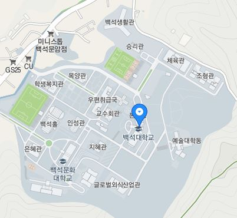

도서관

본부동까지 거리 :
진리관까지 거리 :
목양관까지 거리 :
예술동까지 거리 :
체육관까지 거리 :
교수회관까지 거리 :
승리관까지 거리 :
지혜관까지 거리 :
조형관까지 거리 :
백석홀까지 거리 :
학생복지관까지 거리 :
보다 자세한 위치 및 거리를 알고 싶다면?
https://www.google.com/maps/place/%EB%B0%B1%EC%84%9D%EB%8C%80%ED%95%99%EA%B5%90/data=!4m6!3m5!1s0x357b293c64087a5b:0x81d1a65485393d8d!4b1!8m2!3d36.8394518!4d127.1839014